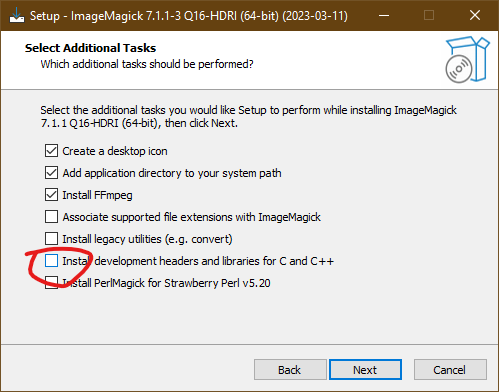

The Leeds BookML guide
Vincenzo Mantova
23rd February 2024
Abstract
A self-contained guide to BookML as used at the University of Leeds: how to convert (virtually any) LATEX file to zip and SCORM packages with both HTML and PDF versions of all files.
1 Installation
1.1 Prerequisites
Full list of prerequisites
-
•
LATExml (minimum 0.8.5, recommended 0.8.6 or later)
-
•
Any image handling: the Perl module Image::Magick
-
•
Support for EPS, PDF images: Ghostscript
-
•
BookML images: Ghostscript, latexmk, preview.sty, dvisvgm (minimum 1.6, recommended 2.7 or later)
-
•
Automatic PDF, HTML, and zip creation: GNU Make, latexmk, zip, optionally texfot
The packages latexmk, preview.sty, dvisvgm and texfot are distributed by MiKTEX, TEX Live, and virtually all Linux distributions.
For the rest of the software, follow the instructions below.
macOS (MacPorts)
-
•
Open the Terminal app.
-
•
Run
xcode-select --installto get the Command Line Developer Tools. -
•
Install MacPorts as per its official instructions from point 2 (no need for full Xcode!).
- •
-
•
If you use MacPorts for LATEX, you can add the optional packages via:
# for automatic PDF, html, zip creationsudo port install dvisvgm latexmk# for BookML images (preview.sty)sudo port install texlive-latex-extra# for texfot (to reduce latex output during PDF creation)sudo port install texlive-bin-extra -
•
To upgrade:
sudo port selfupdatesudo port upgrade outdated -
•
The remaining packages (e.g. GNU Make) are already available.
macOS (Homebrew)
The Homebrew version has some packaging issues around ImageMagick and I strongly recommend you use MacPorts, but if you really want to, run
brew install latexml
Linux Debian-based (Ubuntu, Debian, Mint, etc)
Download the package for the future Ubuntu releases at https://launchpad.net/ubuntu/+source/latexml. At the time of writing, this is latexml_0.8.7-1_all.deb. Install ghostscript, make, latexmk, dvisvgm, preview-latex-style, texlive-extra-utils (for texfot), zip, according to your needs.sudo dpkg -i latexml_0.8.7-1_all.debsudo apt -f installsudo apt install ghostscript make latexmk dvisvgm preview-latex-style texlive-extra-utils zip
Linux RPM-based (Red Hat, CentOS, AlmaLinux, etc)
Not figured out yet!Linux School PC (presumably only desktop connected via cable)
Run the following each time you open a new terminal:module load latexmlmodule load texlive
module use /apps/linsw1/modulefiles/7/
Windows (AppsAnywhere — easiest, now works offline too)
By far the easiest method. It also work in the Windows Virtual Desktop (very slowly!).-
•
Make sure to have AppsAnywhere installed.
-
•
Install Ghostscript, ImageMagick, MiKTEX, StrawberryPerl.
-
•
Open StrawberryPerl and run:
cpanm --verbose Image::Magickcpanm --notest --verbose LaTeXML
cpanm Image::Magick --build-args 'CC=g++' --verbose
Windows (with admin rights)
For University laptops: you can gain admin rights by right-clicking an the installer and choosing “Request Run as Administrator”.-
•
Install StrawberryPerl 64bit version.
-
•
Install ImageMagick x64-dll. During installation, enable ‘Install development headers and libraries for C and C++’:
Be very careful not to choose 32bit, portable, or static variants.
-
•
Install Ghostscript 64bit.
-
•
In StrawberryPerl, run
cpanm --verbose Image::Magickcpanm --notest --verbose LaTeXML
cpanm Image::Magick --build-args 'CC=g++' --verbose
Windows (without admin rights)
Install the Scoop package manager (no admin required). Then run:scoop install perlscoop install imagemagickscoop install ghostscriptcpanm --verbose Image::Magickcpanm --notest --verbose LaTeXML
scoop update --all to update.
Note: if Image::Magick fails complaining about needing a C++ compiler, run
cpanm Image::Magick --build-args 'CC=g++' --verbose
1.2 BookML
Unzip the template.zip file from the latest BookML release. Open a terminal in the directory containing Makefile, template.tex, and run
make detect
…or gmake detect on Windows.
How do I run commands in the terminal?
You simply type them and press <ENTER>. To open the terminal in a specific folder:Windows
Install the Windows Terminal. The easiest way is from the Microsoft Store. If the Store is blocked, you can use
winget install --id Microsoft.WindowsTerminal -e
macOS
Right-click on a folder and select “New Terminal at Folder”.Linux
Many file browsers have an option “Open in Terminal” when you right-click on a folder.Use gmake detect on Windows. You should get something like the following:
| Main files: | template.tex |
| BookML: | v0.4.3 OK |
| GNU Make: | 4.4.1 OK |
| TeX: | MiKTeX 24.1 OK |
| perl: | v5.38.0 OK (optional) |
| LaTeXML: | 0.8.7 OK |
| Image::Magick: | 7.1.1 OK (required for any image handling) |
| Ghostscript: | 10.02.1 OK (required for EPS, PDF, BookML images) |
| dvisvgm: | 3.1.1 OK (required for SVG, BookML images) |
| dvisvgm/libgs: | 9.25 OK (required for SVG, BookML images) |
| latexmk: | 4.82a OK |
| texfot: | 1.48 OK (optional) |
| preview.sty: | 13.3 OK (required for BookML images) |
| zip: | 3.1b OK |
Anything missing will show a red NOT FOUND. If the version is too old, there will be a red or a yellow prompt to upgrade.
First try? Run make (or gmake on Windows). After a bit, you will find a folder template and two zip files template.zip, SCORM.template.zip. Please open template/index.html and verify that it looks as you would expect. The zip files are set up for upload on Minerva.
To update BookML, simply replace the bookml folder with the content of a newly downloaded bookml.zip.
2 Converting your files
2.1 How to convert
Once your are satisfied that the template is working, drop your own files next to template.tex: each file containing \documentclass will be treated the same as template.tex, and will be compiled to PDFs, SCORM and zip packages. Run make detect again, and check that ‘Main files’ contains such new files.
There is now a reasonable chance that your files are already working (unless you are using TikZ, which needs some care), but before your first try, you should truncate your files with an early \end{document}, as compilation times can be long and most errors will originate in the preamble anyway.
To compile, do the following:
-
•
After a bit, you will have files named like lecturenotes.zip, SCORM.lecturenotes.zip. The former works with ‘Upload Zip package’; the latter with ‘Create SCORM package’.
-
•
When you change a file and want to regenerate the zip files, just run
makeagain. Only the files that need updating will be recompiled. -
•
You may occasionally get errors like
No rule to make target 'bookml-short-guide.toc', needed by 'auxdir/bookml-short-guide.pdf'.If that happens, run
makea second time. If the error is still there, runmake clean-aux, or delete the auxdir folder, to reset BookML.
What is make doing? Step-by-step look under the hood
Each time you call make, it does the following.-
0.
Read the file Makefile in the folder you are in. That file will import instructions from the bookml folder about what to do next.
-
1.
Check all .tex files in the folder and find the ones containing
\documentclass.In example.zip, it finds main.tex and secondfile.tex.
-
2.
Arrange to generate two ‘targets’, a zip package and a SCORM package, for every such file in step 1.
In the example, the targets are main.zip, SCORM.main.zip, secondfile.zip, SCORM.secondfile.zip.
-
3.
Check if the targets of step 2 exist, and if so, if any of their ‘prerequisites’ are newer, in which case the targets must be updated. The prerequisites themselves are checked recursively to see if they also need to be updated. The prerequisite chain looks like ‘zip => html => xml => pdf => tex’.
In the example, on your first try, Make will follow the following prerequisite chain: main.zip => main/index.html => main.xml => main.pdf => main.tex. It will then build the prerequisites backwards until all is in place to create main.zip. Likewise for the other targets.
-
4.
Build the PDF of each LATEX file found in step 1, using latexmk to run pdflatex, makeindex, bibtex and similar as many times as necessary; record which files are
\input’d and mark them as prerequisites for step 3.In the example, it builds main.pdf, secondfile.pdf, and marks chapter1.tex as prerequisite of main.pdf. Any update to chapter1.tex will cause main.pdf to be updated next time you call make.
-
5.
In the example, main.xml, secondfile.xml.
-
6.
Try to build or update the alternative formats requested using
\bmlAltFormat. For now, BookML only knows how to build PDF files from LATEX files that have the same name; if you need other formats, you need to build them yourself, or add the relevant instructions (called ‘recipes’) in the Makefile.In the example, main-sans.pdf and main-sans-large.pdf are the alternative formats requested in the preamble of main.tex, on top of main.pdf which has been built already. Since the example contains main-sans.tex, main-sans-large.tex, BookML will know what to do, and generate the alternative PDFs by repeating step 4.
-
7.
Thus generate the folders main, secondfile, each containing an index.html.
-
8.
Zip the folder and pack the SCORM package (the latter requiring a couple more steps I will not explain), using zip
At last, you will get main.zip, SCORM.main.zip, secondfile.zip, SCORM.secondfile.zip.
2.2 Necessary adjustments
Consult template.tex for the minimal requirements in the preamble (e.g. you must provide a \title command). You should create copies of template-sans.tex, template-sans-large.tex for each of your main files, at least as a baseline. Alternative versions can be customized and removed, as explained in the next subsection. We recommend offering some alternative versions as good practice.
You should also follow the key requirements below.
-
•
Use the
babelpackage to set the document language (crucial for screen readers to work correctly). For instance:\usepackage[british]{babel} -
•
Set the document metadata in the preamble (essential for proper navigation links, web page titles, SCORM package metadata, and so on).
\title{LaTeXML + BookML guide}\author{Vincenzo Mantova} -
•
Ensure all TEX style formatting commands (
\Large,\bf, …) are enclosed between braces, and use LATEX alternatives such as\textbf{}when possible. If you see the wrong font in the HTML output, it is likely caused by TEX-style font switches that haven’t gone well.{\bf some bold text} % DO\bf some bold text % DON'T\textbf{some bold text} % BEST -
•
Using TikZ or XY-pic and an old version of LATExml (before 0.8.7)? Follow the instruction below right away. Without it, LATExml will take several minutes longer (regardless of the size of the file) and often produce broken images. Since version 0.8.7, LATExml has become more capable, and 0.8.8 can produce excellent TikZ pictures as well as tikzcd diagrams.
2.3 Alternative formats
To create an alternative PDF meant to be included in the same SCORM or zip package (such as a large print PDF), for instance for the lecturenotes.zip package, add the following to the preamble of lecturenotes.tex:
\usepackage{bookml/bookml} % if not already in your preamble\bmlAltFormat{lecturenotes.LARGE.pdf}{PDF (large print)}
and create a corresponding lecturenotes.LARGE.tex that
-
•
does NOT contain
\documentclass(or it will be compiled into its own SCORM and zip packages); -
•
configures e.g. different fonts and margins, then call
\input{lecturenotes.tex}.
BookML will automatically compile and include lecturenotes.LARGE.pdf in your final outputs.
Consult template.tex, template-sans.tex, template-sans-large.tex for some simple techniques to achieve this.
If you instead want distinct SCORM and zip packages, for instance compile a problem sheet both with and without solutions, explore example.zip to see some possibilities.
2.4 Other adjustments
Once you have language and metadata in place, follow the advice below to improve the chances your file will compile correctly, especially if you use TikZ or XY.
Many or complex TikZ pictures
BookML has a facility to generate the images via LATEX, and bypassing LATExml’s slow support for TikZ altogether. Ensure that all of the TikZ code is either in the preamble or between\begin{tikzpicture} and \end{tikzpicture}. Then add the following to the preamble, after the bookml package:
\bmlImageEnvironment{tikzpicture}\bmlImageEnvironment{tikzcd} % if using tikzcd\iflatexml\else\usepackage{tikz}% ... ALL of the TikZ-related preamble code here\fi% No TikZ commands after this point!
Other figures, e.g. XY-matrices or animate
Most packages producing pictures are not supported by LATExml, but you can get around it exactly like with TikZ:-
1.
wrap the preamble commands within
\iflatexml\else ... \fi; -
2.
if the pictures are their own environments, use
\bmlImageEnvironmentas for TikZ; see for instance Figure 2; -
3.
if the pictures are not environments, such as
\xymatrix, wrap them between\begin{bmlimage}and\end{bmlimage}: see Figure 3.
Alternative text for images (essential for screen readers)
For\includegraphics and LATExml 0.8.7, just add the option alt={description of the image}, as in
\includegraphics[alt={Computation of ...}]{figure1}
\bmlDescription{text} right after the image (do not leave an empty line between the image and the text). This will populate the alt attribute (or equivalent) and will be read by screen readers in place of the image.
Please keep in mind that sighted users may also benefit from the alternative text. If that is the case, consider using \begin{figure} and \caption{}, and possibly add a reference in the caption to more explanations (e.g. the definition, a proof, etc.).
Table headers (important for screen readers)
You may need to explicitly mark some table rows as headers. This can be done with some appropriate commands provided by LATExml. See Figure 6 for an example.Split into multiple pages
AddSPLITAT=chapter to Makefile to split the output in various ways (you can use part, chapter, section…). You must split long documents, or MathJax will take ages to render your formulas.
You can also specify different splitting strategies for different files: add lines like the following
lecturenotes.zip: SPLITAT=sectionproblemsheet1.zip: SPLITAT=
Disable the bookdown style
If you do not like the bookdown style and prefer a more plain page, like the old latexmlleeds, use
\usepackage[style=plain]{bookml/bookml}
lecturenotes.zip: LATEXMLPOSTEXTRAFLAGS=--navigationtoc=none
Navigation sidebar
This is already included in the bookdown style. If you disable it, but still want the sidebar, add
lecturenotes.zip: LATEXMLPOSTEXTRAFLAGS=--css=LaTeXML-navbar-left.css
Embed videos
You can use\bmlRawHTML{html} to write arbitrary HTML, in particular output the embedding code for Stream, Mediasite, YouTube, or any other platform. Unfortunately, Microsoft Stream Classic is being phased out and may be broken in some browsers.
See Figure 5 below for some reusable code that will also make the video adapt to the size of the page.
Unsupported packages or classes
LATExml supports only so many packages (full list). If your package is not supported, or is not supported well, see subsection 2.5.Resize BookML images
To change the size of the BookML images, use
\usepackage[imagescale=2.5]{bookml/bookml}
\usepackage[dpi=192,magnify=2,upsample=3,zoomout=2]{latexml}
Foldable environments
If you want to hide a proof, a solution, or some additional details, you can use the following:\<DETAILS>\<SUMMARY>\textbf{Solution.}\</SUMMARY>...details of the solutions...\</DETAILS>
\<, and using the XML syntax (for instance, attributes must have values between quotes, self-closing tags must end with />).
If you like the styling used here, just drop the bookmlleeds-details.css file into the bmluser folder.
Customize header and footer (e.g. for copyright notice)
Use the environmentslxHeader, lxFooter.
\begin{lxFooter}Copyright \copyright{} 2021 Vincenzo Mantova, University of Leeds.\end{lxFooter}
Disable MathJax for an equation
Add\bmlDisableMathJax within the equation. Please review the output in Firefox, Safari, and Chrome/Edge (from versions 109).
Other options
Visit the BookML documentation, the LATExml documentation, or runlatexml --help, latexmlpost --help, latexmlc --help.
2.5 Unsupported packages or classes
If LATExml does not recognise a particular package or class, it is sometimes easy to make it work, but it can also be near impossible.
-
•
If you use your own custom-made package or class to keep your favourite packages and options (so essentially a fancy preamble): change its extension to .tex and use
\inputinstead of\usepackage. -
•
If the package is producing images: use the same strategy as for TikZ, and remember to provide alternative text.
-
•
If LATExml supports a similar package: replace it (for instance, use actuarialangle instead of lifecon).
-
•
If the package is PDF-specific: use
\iflatexmland\newcommandin the preamble to define macros that do something equivalent, or nothing at all, in HTML. Useful, for instance, for references including page numbers, or setting headers and footers. -
•
If the class is not supported, tell LATExml to use a different class:
% just like \usepackage, but before \documentclass\RequirePackage{bookml/bookml}\iflatexml\documentclass[12pt]{book}\else\documentclass[12pt]{memoir}\fiMake sure you pass your class options are consistent, for instance use the same font size.
-
•
If none of the above works, copy the missing macros directly from the package (or class) and add them to your preamble (usually within
\makeatletterand\makeatother). It may work for simple packages, or packages partially supported by LATExml. -
•
Generalising the last idea, you can tell LATExml to read the entire package or class as if you were using
\input. To do this, create a file named package.sty.ltxml in the same folder as the .tex file (replace package with the actual package name, and sty with cls if dealing with a class):use LaTeXML::Package;InputDefinitions('package', type => 'sty', noltxml => 1);1;This will instruct LATExml to read the content of package.sty. This may work wonderfully, or crash miserably.
2.6 Examples
\begin{bmlimage}\[ \xymatrix{A \ar[rd] \ar^\phi[r] & B \\& C } \]\end{bmlimage}\bmlDescription{A, B, C drawn in a triangle with C under B,an arrow labelled phi from A to B and an arrow from A to C}
% preamble\newcommand{\includestream}[2]{\bmlRawHTML{<div style="max-width: 1920px; width: 100\%"><div style="position: relative; padding-bottom: 56.25\%; height: 0; overflow: hidden;"><iframesrc="https://web.microsoftstream.com/embed/video/#1?autoplay=false\&showinfo=true"title="#2" style="border:none; position: absolute; top: 0; left: 0;right: 0; bottom: 0; height: 100\%; max-width: 100\%;"allow="picture-in-picture" allowfullscreen="" width="1920" height="1080"></iframe></div></div>}Watch \href{https://web.microsoftstream.com/video/#1}{#2}}% document\includestream{ba6b8866-df29-4dea-a47e-13decc5cd409}{Mock recording for Models and Sets}
\begin{tabularx}{\textwidth}{c|X||c}\lxBeginTableHead{} Header 1 & Header 2 & Header 3 \\\hline \lxEndTableHead{}Content & Content & Content \\More content & content & content \\\hline\end{tabularx}\caption{A table}
| Header 1 |
Header 2 |
Header 3 |
|---|---|---|
| Content |
Content |
Content |
| More content |
content |
content |
2.7 The latexml.sty package (advanced)
The bookml package automatically loads the latexml.sty package (and it includes its own copy if latexml.sty is not in your LATEX installation). latexml.sty offers a variety of commands which may be useful. Just open latexml.sty (it is very short) to see all the commands, a bit of documentation in the comments, and the occasional example. The source of the LATExml documentation contains many examples too. Below are some relevant ones.
-
•
\lxAddClass{class}and\lxWithClass{class}{content}to add CSS classes to the output; -
•
\lxBeginTableHead,\lxEndTableHeadand variations to mark table headers and footers (read the latexml.sty source for how to use them); -
•
\lxContextTOC,\lxNavbar{arg},\lxHeader{arg},\lxFooter{arg}to customise the HTML pages; -
•
\lxFcn{code},\lxID{code},\lxPunct{code}to help LATExml understand the meaning of mathematical symbols (for instance, read as ‘ applied to ’ as opposed to ‘ multiplied by ’); the wrong interpretation may affect screen readers, so it will need to be addressed, but for now this is too hard to deal with.
3 Uploading to Minerva
3.1 SCORM packages
-
1.
On the front page of your module, under ‘Module content’, click the button where you want to insert your item.
-
2.
Choose ‘ Create’.
-
3.
Choose ‘SCORM package’.
-
4.
Choose ‘Upload SCORM package’ and select your SCORM.<...>.zip file.
-
5.
Disable ‘Grade SCORM’ and click ’Save’.
Note. Title and abstract of the file will become title and description of the Minerva entry. You will be able to edit the Minerva details right after uploading, if necessary.
3.2 Plain ZIP packages
For the initial permission setup, as well as screenshots of the entire process, consult Chris’ guide.
Below is a summary of the day-to-day upload process, once permissions have been set up:
-
1.
On the front page of your module, under ‘Module content’, click the button where you want to insert your item.
-
2.
Choose ‘Content Collection’, then ‘Browse Content Collection’.
-
3.
Browse to the folder that has been set up with the appropriate permisions.
-
4.
Click ‘Upload’ and choose ‘Upload Zip Package’.
-
5.
Use ‘Browse Local Files’ to upload your <...>.zip file. You must enable ‘If selected, the system automatically overwrites the existing file with the same name’.
-
6.
Click ‘Submit’, the choose ‘index.html’ as file to be presented on Minerva.